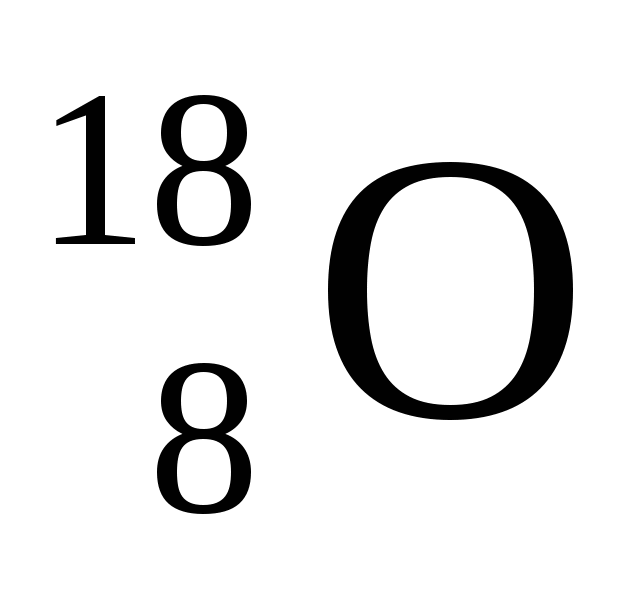
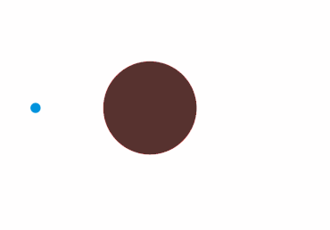

-Los isótopos son elementos (átomos, iones...) que tienen una particularidad. De hecho, ¡tienen el mismo número de protones pero un número diferente de neutrones!
Por ejemplo Oxígeno:

Con como ejemplo:

Donde otra vez:
-Este es el caso de los núcleos atómicos utilizados en las centrales nucleares, el uranio. El uranio en particular tiene muchos isótopos como los más conocidos: uranio 235 y 238, pero también uranio 233, 234, 236 ...
Después del descubrimiento del fenómeno de la fisión espontánea (ver segunda descripción), se inventó la escritura simbólica de la fisión nuclear:

Lo que da esta reacción:
 Primavera WikipédiaDel mismo modo, para la fusión:
 Primavera Wikipédia
Primavera Wikipédia
La reacción: